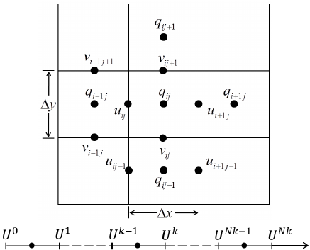

Ocean Modeling with the Navier-Stokes Equations: or as I think of it, 'my missed oppurtunity.'¶
Tyler Tucker
Project outline¶
This work borrows heavily from Jochen Kaempf's book Advanced Ocean Modelling: Using Open-Source Software. Equations, terminology, and code are used to model physical ocean processes. Kaempf's numerical method of choice is the Successive Over-Relaxation (SOR) method. Although there are faster more efficient methods using Krylov Subspace methods, the SOR can be as an exclusive solver for non-symmetric matrices, where the latter methods may need some tweaking. Nevertheless, I am set out to see how much more efficient these methods can be.
In this work, I will implement Successive over relaxation (SOR), conjugate gradient (CG), and bi-conjugate gradient stability (BICGSTAB) methods on existing numerical solutions covered in his book. The scope of the project is to swap out the SOR solver with CG and BICGSTAB for the following simulations.
- Surface Gravity Waves
- Density-Driven Flow
- Kelvin Helmholtz Instability
- Convection
Navier Stokes Equations¶
A Fluid is modeled using the Navier-Stokes equations (NSE). Discretizing NSE leads to the Poisson equation. The NSE equations in two dimensions are the following.
$$ \frac{\partial u}{\partial t} + Adv(u) = -\frac{1}{\rho_0}\frac{\partial P}{\partial x} + \frac{\partial }{\partial x}\left( A_h \frac{\partial u}{\partial x} \right) + \frac{\partial}{\partial z}\left( A_z\frac{\partial u}{\partial z} \right) $$ $$ \frac{\partial w}{\partial t} + Adv(w) = -\frac{1}{\rho_0}\frac{\partial P}{\partial z} -\frac{\rho'}{\rho_0}g + \frac{\partial }{\partial x}\left( A_h \frac{\partial w}{\partial x} \right) + \frac{\partial}{\partial z}\left( A_z\frac{\partial w}{\partial z} \right) $$ $$ \frac{\partial u}{\partial x} + \frac{\partial w}{\partial z} = 0 $$ $$ Adv(\psi) = u \frac{\partial \psi}{\partial x} + w \frac{\partial \psi}{\partial z} $$
For horizonatal and vertical velocity $u$ and $w$, pressure $P$ density $\rho_0$, local density $\rho'$, and horizontal and vertical eddy viscosity $A_h$, $A_z$. We will eventually model this in its entirety, but first, let's ignore the Advection terms. Here density is constant. The simplified NSE become
$$ \frac{\partial u}{\partial t} = -\frac{1}{\rho_0}\frac{\partial P}{\partial x} $$ $$ \frac{\partial w}{\partial t} = -\frac{1}{\rho_0}\frac{\partial P}{\partial z} $$ $$ \frac{\partial u}{\partial x} + \frac{\partial w}{\partial z} = 0 $$

Modeling:¶
For a two dimensional ocean on a rectangular coordinate system (flat bottom) The evolution of sea level is described by the volumetric conservation equation
$$ \frac{\partial \eta}{\partial t} = -\frac{\partial h(u)}{\partial x} $$
For depth from sea surface $\eta$ and depth integrated horizontal flow $h(u) = \int_0^L u(x,z)dz$. This equation describes surface waves.
A hydrostatic equation has the form: $$ p = \rho_0 g \eta $$ Total pressure is a linear combination of hydrostatic pressure $p$ and dynamic pressure $q$. $$ P = p + q $$ Since $P$ is a linear combination, we can model dynamic pressure with our simplified NSE. $$ \frac{\partial u}{\partial t} = -\frac{1}{\rho_0}\frac{\partial q}{\partial x} $$ $$ \frac{\partial w}{\partial t} = -\frac{1}{\rho_0}\frac{\partial q}{\partial z} $$ $$ \frac{\partial u}{\partial x} + \frac{\partial w}{\partial z} = 0 $$ $$ \frac{\partial q_s}{\partial t} = -\rho_0 g \frac{\partial h(u)}{\partial x} $$ Solving for velocities $u$ and $w$ involves first solving dynamic pressure $q$, which is further decomposed into two portions. The first is the current pressure at time step $n$, $q^n$ and the second is the dynamic pressure correction term $\Delta q^{n+1}$ $$ q \rightarrow q^n + \Delta q^{n+1} $$
We calculate $\Delta q^{n+1}$ implicitly using PDE's such as SOR or CG. To do this need to discritize and write our velocities in terms of pressure. First start with a guess $u^*$ adn $w^*$ for the whole domian, indexed by $i, k$ $$ u^*_{i,k} = u^n_{i,k} - \frac{\Delta t}{\rho_0 \Delta x}\left(q^{n}_{i, k+1} - q^{n}_{i,k} \right) $$ $$ w^*_{i,k} = w^n_{i,k} - \frac{\Delta t}{\rho_0 \Delta z}\left(q^{n}_{i-1, k} - q^{n}_{i,k} \right) $$ We then solve for $u^{n+1}_{i,k}$ $w^{n+1}_{i,k}$ with our guesses. $$ u^{n+1}_{i,k} = u^*_{i,k} - \frac{\Delta t}{\rho_0 \Delta x}\left(\Delta q^{n+1}_{i, k+1} - \Delta q^{n+1}_{i,k} \right) $$ $$ w^{n+1}_{i,k} = w^*_{i,k} - \frac{\Delta t}{\rho_0 \Delta z}\left(\Delta q^{n-1}_{i, k+1} - \Delta q^{n+1}_{i,k} \right) $$ The 'simpliest' term in the NSE is the continuity equation. This says that our fluid is incompressible. $$ \frac{\partial u}{\partial x} + \frac{\partial w}{\partial z} = 0 $$ Discritizing this by backward differencing $\frac{\partial u}{\partial x}$ and forward differnce $\frac{\partial w}{\partial z}$ to get $$ \frac{u^{n+1}_{i,k} - u^{n+1}_{i,k-1}}{\Delta x} + \frac{w^{n+1}_{i+1,k} - w^{n+1}_{i,k}}{\Delta z} = 0 $$ Substituting our velicites in terms of $\Delta q$, $u^*$, and $w^*$, and simplify some, we get the poisson equation. $$ a_e \Delta q^{n+1}_{i, k+1} + a_w \Delta q^{n+1}_{i, k-1} + a_b \Delta q^{n+1}_{i+1, k} + a_e \Delta q^{n+1}_{i-1, k} - a_0 \Delta q^{n+1}_{i, k} = q^*_{i,k} $$
Where $a_e = a_w = \Delta z / \Delta x$, $a_t = a_b = \Delta x / \Delta z$, $a_0 = a_w + a_e + a_t + a_b$, and $$ q^*_{i,k} = \frac{\rho_0}{\Delta t} \left[ (u^*_{i,k} - u^*_{i,k-1})\Delta y + (w^*_{i,k} - w^*_{i+1,k})\Delta x \right] $$
Note that if $\Delta z = \Delta x$ We have the familiar Poisson equation for an equal step size length. Alas, it is better to model the dynamics using a finer spacing in the $z$ direction.
Here I'm going to take us on a tangent that will hopefully link implementation with theory. Let's take a hard look at the Poisson equation.
$$ a_e \Delta q^{n+1}_{i, k+1} + a_w \Delta q^{n+1}_{i, k-1} + a_b \Delta q^{n+1}_{i+1, k} + a_e \Delta q^{n+1}_{i-1, k} - a_0 \Delta q^{n+1}_{i, k} = q^*_{i,k} $$ We can model this as a system of equations $$ A\Delta q^{n+1}_{i, k} = q^*_{i,k} $$ Where A is a non-symmetric but positive definate matrix. You can build this matrix using the python code below.
import numpy as np
import scipy.sparse as sp
import matplotlib.pylab as plt
import pdb
%matplotlib inline
%load_ext pygments_magic
def build_a_matrix(nx, nz, dx, dz):
cw = dx/dz
ce = cw
ct = dz/dx
cb = ct
co = cw + ce + ct + cb
ntot = (nx+2)*(nz+2)
topbun = np.hstack((np.eye(nx+2), np.zeros((nx+2, ntot-(nx+2)))))
botbun = np.hstack((np.zeros((nx+1, ntot-(nx+1))), np.eye(nx+1)))
topcheese = np.zeros((1, ntot))
# start building matrix
row = 1
topcheese[0, (nx+2)*row]=1
ham = np.vstack( (topbun, topcheese) )
for row in range(1, nz+1):
M = sp.diags( [ct, cw, -co, ce, cb], [0, nx+1, nx+2, nx+3, nx+2+nx+2], shape=( nx, 3*(nx+2)-1 ) ).toarray()
#mShift = 1 + (row -1)
lM = np.zeros( (nx, ( (row-1)*(nx+2) + 1) ) )
rM = np.zeros( (nx, ntot - M.shape[1] - lM.shape[1] ) )
Meat = np.hstack((lM, M, rM))
ham = np.vstack((ham,Meat))
topcheese = np.zeros((1, ntot))
topcheese[0, (nx+2)*(row+1)-1]=1
botcheese = np.zeros((1, ntot))
botcheese[0, (nx+2)*(row+1)]=1
ham = np.vstack((ham,topcheese, botcheese))
#pdb.set_trace()
ham = np.vstack((ham,botbun))
return ham
For example, a 25x25 matrix with $\Delta x = 5$ and $\Delta y$ has the shape described below
# nx and nz are the inner dimensions
nz = 3
nx = 3
dx = 5
dz = 2
mahm = build_a_matrix(nx, nz, dx, dz)
plt.spy(mahm)
![](data:image/png;base64,iVBORw0KGgoAAAANSUhEUgAAAP8AAAD8CAYAAAC4nHJkAAAABHNCSVQICAgIfAhkiAAAAAlwSFlz
AAALEgAACxIB0t1+/AAACwdJREFUeJzt3U+InPUdx/HPp2ov6iGS6RKsqRVyyaUrWUSolIggqZfo
Reqh5CCsBysKXoIXvRS8qO2hCGsNyUEtAbXmIC0xCGkv0lWCRtOiyIYa1uwGD3or0W8P+wQmyc7O
szu/ef7k+37BMM888+zMdx785DfP83z9jSNCAPL5UdsFAGgH4QeSIvxAUoQfSIrwA0kRfiCp1sJv
e5/t/9j+wvbBtuqow/aS7U9sn7K92HY9V7J9yPaK7dND626xfdz259X9tjZrHDai3udsn6v28Snb
D7RZ4yW2b7P9vu3PbH9q+8lqfWf3b12thN/2dZL+JOnXknZLesT27jZq2YR7I2I2IubaLmQdhyXt
u2LdQUknImKXpBPV4644rKvrlaSXqn08GxHvNlzTKBclPR0RuyXdLenx6r/VLu/fWtoa+e+S9EVE
fBkR/5P0F0n7W6ql9yLipKRvrli9X9KRavmIpAcbLWoDI+rtpIhYjoiPquXvJJ2RdKs6vH/raiv8
t0r679Djr6p1XRWS3rP9oe35toupaSYilqvlryXNtFlMTU/Y/rg6LOjc12jbt0u6U9IH6uf+vQwn
/Oq5JyJmtXaY8rjtX7Vd0GbEWg931/u4X5Z0h6RZScuSXmi3nMvZvknSm5Keiohvh5/ryf69Slvh
PyfptqHHP63WdVJEnKvuVyS9rbXDlq47b3uHJFX3Ky3Xs6GIOB8R30fED5JeUYf2se0btBb81yLi
rWp1r/bvetoK/78k7bL9c9s/lvQbScdaqmVDtm+0ffOlZUn3Szq98V91wjFJB6rlA5LeabGWsS4F
qfKQOrKPbVvSq5LORMSLQ0/1av+ux239X33VpZw/SLpO0qGI+H0rhYxh+w6tjfaSdL2k17tWq+03
JO2VtF3SeUnPSvqrpKOSdko6K+nhiOjESbYR9e7V2lf+kLQk6bGhY+rW2L5H0j8kfSLph2r1M1o7
7u/k/q2rtfADaBcn/ICkCD+QFOEHkiL8QFKEH0iq1fD3qFVWUr/q7VOtUr/q7VOtG2l75O/bTuxT
vX2qVepXvX2qdaS2ww+gJY02+dge+2Z79uxpopQtWV1d1WAwaLuMWvpUq9Svertc69LSki5cuOA6
214/yRvZ3ifpj1pr0f1zRDw/yetJ0uJi5ybKAXpjbq7+XDNb/trf09l4AFQmOeZnNh6gxyYJf63Z
eGzP217s4sSXQGYTHfPXERELkhakeif8ADRjkpG/V7PxALjcJOHvzWw8AK625fBHxEVJv5P0d61N
Z3w0Ij7d6G/27NmjiNjwZnvDG4AyJjrmr35YoSs/rgBgE2jvBZIi/EBShB9IivADSRF+ICnCDyQ1
9fbezRo3v0Cda/38EAkwHiM/kBThB5Ii/EBShB9IivADSRF+ICnCDyRF+IGkOtfkM06dBh4agYDx
GPmBpAg/kBThB5Ii/EBShB9IivADSRF+ICnCDyTVuyafOmgEAsZj5AeSIvxAUoQfSIrwA0kRfiAp
wg8kRfiBpAg/kNQ12eRTR4lGIJqA0GcThd/2kqTvJH0v6WJEzJUoCsD0lRj5742ICwVeB0CDOOYH
kpo0/CHpPdsf2p4vURCAZkz6tf+eiDhn+yeSjtv+d0ScHN6g+kdhXpJ27tw54dsBKGWikT8izlX3
K5LelnTXOtssRMRcRMwNBoNJ3g5AQVsOv+0bbd98aVnS/ZJOlyoMwHRN8rV/RtLb1bXw6yW9HhF/
m7SgPl1brzMhSB1NfSYmMMGwLYc/Ir6U9IuCtQBoEJf6gKQIP5AU4QeSIvxAUoQfSIrwA0kRfiCp
zk3mMa7JpMlGlRK11NFUYxMTmGAYIz+QFOEHkiL8QFKEH0iK8ANJEX4gKcIPJEX4gaQ61+QzTolG
lbqv01QtJV6jS41NNAL1AyM/kBThB5Ii/EBShB9IivADSRF+ICnCDyTVu+v8dXTpOnOJWkpNGlJC
l/YtJsPIDyRF+IGkCD+QFOEHkiL8QFKEH0iK8ANJEX4gqWuyyeda06UJTHDtYOQHkhobftuHbK/Y
Pj207hbbx21/Xt1vm26ZAEqrM/IflrTvinUHJZ2IiF2STlSPAfTI2PBHxElJ31yxer+kI9XyEUkP
Fq4LwJRt9Zh/JiKWq+WvJc2M2tD2vO1F24urq6tbfDsApU18wi/WTiGPPI0cEQsRMRcRc4PBYNK3
A1DIVsN/3vYOSaruV8qVBKAJWw3/MUkHquUDkt4pUw6Apoxt8rH9hqS9krbb/krSs5Kel3TU9qOS
zkp6eJpFdlXfGmtKzAjU1Ofp277to7Hhj4hHRjx1X+FaADSIDj8gKcIPJEX4gaQIP5AU4QeSIvxA
UoQfSIqZfCbQpRl2StVS4jW69HloBBqNkR9IivADSRF+ICnCDyRF+IGkCD+QFOEHkuI6/5SVuF5d
6lo1vQDTq6WPGPmBpAg/kBThB5Ii/EBShB9IivADSRF+ICnCDyRFk08HdKnJpEQtJRqFSunSvu0a
Rn4gKcIPJEX4gaQIP5AU4QeSIvxAUoQfSIrwA0nR5IPiujR7EUYbO/LbPmR7xfbpoXXP2T5n+1R1
e2C6ZQIorc7X/sOS9q2z/qWImK1u75YtC8C0jQ1/RJyU9E0DtQBo0CQn/J6w/XF1WLCtWEUAGrHV
8L8s6Q5Js5KWJb0wakPb87YXbS+urq5u8e0AlLal8EfE+Yj4PiJ+kPSKpLs22HYhIuYiYm4wGGy1
TgCFbSn8tncMPXxI0ulR2wLoprHX+W2/IWmvpO22v5L0rKS9tmclhaQlSY9NsUYAUzA2/BHxyDqr
X51CLZiyPv10VanZgJr6PH3at5fQ3gskRfiBpAg/kBThB5Ii/EBShB9IivADSTGZRyJdmmRj3OuU
us7f1PX3Evu2VC11MfIDSRF+ICnCDyRF+IGkCD+QFOEHkiL8QFKEH0iKJh9cpkTzTZeaZuroSmNT
k7VIjPxAWoQfSIrwA0kRfiApwg8kRfiBpAg/kBThB5KiyQeb0qVfnSlVS6lmoRKYyQfA1BF+ICnC
DyRF+IGkCD+QFOEHkiL8QFJc50d6XZnApGmM/EBSY8Nv+zbb79v+zPantp+s1t9i+7jtz6v7bdMv
F0ApdUb+i5Kejojdku6W9Ljt3ZIOSjoREbsknageA+iJseGPiOWI+Kha/k7SGUm3Stov6Ui12RFJ
D06rSADlbeqY3/btku6U9IGkmYhYrp76WtLMiL+Zt71oe3F1dXWCUgGUVDv8tm+S9KakpyLi2+Hn
Yu1U57qnOyNiISLmImJuMBhMVCyAcmqF3/YNWgv+axHxVrX6vO0d1fM7JK1Mp0QA01DnbL8lvSrp
TES8OPTUMUkHquUDkt4pXx6AaanT5PNLSb+V9IntU9W6ZyQ9L+mo7UclnZX08HRKBNpV6teDutYI
NDb8EfFPSaM+2X1lywHQFDr8gKQIP5AU4QeSIvxAUoQfSIrwA0kRfiApZvIBCuhjIxAjP5AU4QeS
IvxAUoQfSIrwA0kRfiApwg8kRfiBpGjyARpSohGoZBMQIz+QFOEHkiL8QFKEH0iK8ANJEX4gKcIP
JMV1fqBDxl3HrzMhSF2M/EBShB9IivADSRF+ICnCDyRF+IGkCD+QFOEHknKTvxBie1XS2aFV2yVd
aKyAyfWp3j7VKvWr3i7X+rOIGNTZsNHwX/Xm9mJEzLVWwCb1qd4+1Sr1q94+1boRvvYDSRF+IKm2
w7/Q8vtvVp/q7VOtUr/q7VOtI7V6zA+gPW2P/ABaQviBpAg/kBThB5Ii/EBS/wf8iFdSecwSagAA
AABJRU5ErkJggg==)
$A$ quickly becomes a large matrix, i.e. for a $nz x nx$ domain, $A \in \mathbb{R}^{nx*nz \ x \ nx*nz}$. Kaempf's work avoids writing out this matrix by keeping the domain in a compact Arakawa C grid form. While this reduces matrix multiplication to a double for loop of interior points ie
%highlight figures/poisson-c-grid.f90

The boundaries of x are setup before hand. We are allowed to have non-symmetric matrices by having the wet boolean pointer. We will use this in one of our problems.
However easy to implement, it is difficult to precondition your Arakawa C grid. Nevertheless, we are going to keep using the Arakawa C grid form for now.
Solving the Poisson equation numerically¶
SOR:¶
SOR is just a Gauss Sidel iteraion that accelerates the step by $\omega$ usually between 1.2 and 1.4. The Poisson equation is expressed by $$ \Delta q^{r+1}_{i,k} = (1- \omega)\Delta q^{r+1}_{i,k} - \frac{\omega}{a_0}q^*_{i,k} + \frac{\omega}{a_0}\left( a_e \Delta q^{r+1}_{i, k+1} + a_w \Delta q^{r}_{i, k-1} + a_b \Delta q^{r+1}_{i+1, k} + a_e \Delta q^{r}_{i-1, k} \right) $$ where $r$ is the SOR iteration. Once $|\Delta q^{r+1}_{i,k} - \Delta q^{r}_{i,k}|$ is small enough, we can make the substitution $r=n$. Here we set $\Delta q^{r=0}_{i,k} = \Delta q^{n}_{i,k}$.
Below is a snip of the FORTRAN90 code used to implement this method.
%highlight figures/sor.f90
Using Fortran in Python¶
You can call me old-fashioned. I prefer big band music, I wear my pants up to my chest, and I like my code written in Fortran. These new-fangled programming languages are too abstract. To many oop do-hickies and the like. All balderdash! A good numerical solver like the Conjugate Gradient is best written in a lower level language.
Imagine my delight upon discovering the f2py module. Now you can run Fortran in a python environment. Below is a routine called myCGf that behaves just like our beloved Fortran subroutine. This is the number cruncher. You compile the code and create a python wrapper using the bash command:
$f2py -L/usr/local/lib/libblas.a --debug-capi -c CG.f90 -m myCG
Once that's over, you load the myCG library and run it like any other python function.
Below is an example of how I pass in parameters to a Fortran subroutine. You state what you want in your python environment by including comments with an f2py prefix.
%highlight figures/CG.f90
After Convergence:¶
Upon convergence, we use dynamic pressure $\Delta q^{n}_{i,k}$ to update velocities $u^{n+1}_{i,k}$, and $w^{n+1}_{i,k}$
$$ u^{r+1}_{i,k} = u^*_{i,k} - \frac{\Delta t}{\rho_0 \Delta x}\left(\Delta q^{r+1}_{i, k+1} - \Delta q^{r+1}_{i,k} \right) $$
$$ w^{r+1}_{i,k} = w^*_{i,k} - \frac{\Delta t}{\rho_0 \Delta z}\left(\Delta q^{r-1}_{i, k+1} - \Delta q^{r+1}_{i,k} \right) $$
We also need to update the surface pressure $\Delta q^{n+1}_{0, k}$. Recall our equation for surface pressure $q_s$
$$ \frac{\partial q_s}{\partial t} = -\rho_0 g \frac{\partial h(u)}{\partial x} $$
We are now going to solve for this discretely.
$$ \Delta q^{r+1}_{0, k} = q^{r+1}_{0, k} - q^{n}_{0, k} = -\frac{g \rho_0 \Delta t}{\Delta x}\left(u^{r+1}_{sum,k} - u^{r+1}_{sum,k} \right) $$
Where $u^{r+1}_{sum,k}$ is the vertically integrated horizontal velocity
$$ u^{r+1}_{sum,k} = \sum_{i=0}^{nx+1}u^{r+1}_{i,k}\Delta z $$
CG:¶
Conjugate gradient works only for symmetric matrices, and cannot be used when the simulation has bathymetry. Still, we can use it for four of the five simulations covered. The FORTRAN code below is the generic implementation, injected in Kaempf's code.
%highlight figures/cg.f90
Density-driven flow¶
Here we have a dense fluid starting on our left. The fluid will naturally diffuse, driven by gravity, and mix. We no longer use the simplified NSE. Instead, we need to model advection terms. Fortunately, the Poisson matrix isn't affected, only the right-hand side $q*_{i,k}$ is changed. Kaempf gives a derivation for $q^*_{i,k}$ in his book, and provides code that implements this scheme. $$ A\Delta q^{n+1}_{i, k} = q^*_{i,k} $$ An example problem has a dense plume starting on the left side of a tank of water. As time passes, this plume diffuses into the surrounding domain.

The domain can have a bathymetry. Here we include a ramp, followed by a wall. Bathymetry makes our matrix non-symmetric. Our conjugate gradient method no longer works. Instead, we use the BICGSTAB method.

BICGSTAB:¶
Below is the generic FORTRAN code used for non-symmetric matrices.
%highlight figures/bicgstab.f90
Kelvin Helmholtz Instability¶
We return to using a symmetric matrix; Here we have two fluid bodies moving relative to one another. Friction between the two surfaces will eventually mix and merge, forming a sub-layer. If we wait long enough, the process repeats itself with the middle layer.
In or in pictures...

Convection¶
Changes on the ocean surface, either by freshwater or evaporation cause a stratified fluid to mix. This simulation models density with the inclusion of energy leaving the surface. As the surface cools, seawater contracts and sinks.
Density initial conditions are described by $$ \rho(z) = \rho_0 ( 1 + \frac{N^2}{g} |z|) $$ $N^2$ is the Brunt-Väisälä frequency, set to $10^-6$, $g$ is gravity. The density change over time at the surface is characterized by $$ \frac{\partial \rho_s}{\partial t} = \frac{\alpha Q}{ C_p \Delta z} $$
$C_p$ is specific heat, Q is set to $600 W/m^2$, $\alpha$ is the thermal expansion coefficient.
Evaporation by sunlight can cause the upper ocean to mix; here we model this by slowly adding energy to the surface.

Results table:¶
How much faster are using CG and BICGSTAB? Most cases better, but not at the amounts we have seen in class. Solving these simulations involves a lot of 'setting up' before solving the numerical PDE. One instance is that the 'wet' boolean if statement taking a large chunk of time...
| Problem | Method | Total steps | Time | Step Percent difference | Time Percent difference |
|---|---|---|---|---|---|
| Density Driven Flow | SOR | 7066 | 0.387 | ||
| Density Driven Flow | CG | 5173 | 0.333 | -26.790 | -14.172 |
| DDF With Ramp | SOR | 7266 | 0.444 | ||
| DDF With Ram | BICGSTAB | 7066 | 0.680 | -2.753 | 53.253 |
| Surface Pressure Waves | SOR | 15047 | 1.007 | ||
| Surface Pressure Waves | CG | 8538 | 0.420 | -43.258 | -58.294 |
| Kelvin-Helmholtz | SOR | 12234 | 1.032 | ||
| Kelvin-Helmholtz | CG | 12429 | 0.905 | 1.594 | -12.307 |
| Convection | SOR | 6980 | 0.735 | ||
| Convection | CG | 1766 | 0.596 | -74.699 | -18.874 |
Discussion and Conclusion:¶
The scope of this project was to improve existing code, swapping out the SOR solver with a better method. Including PC involve rewriting the problem to use sparse matrices instead of the Arakawa C-grid. Given the number of simulations, I wanted to cover, Implementing preconditioning was outside the scope of the assignment.
Improvement will be made by redoing the simulations using a sparse matrix so that you can experiment with preconditioners. You can apply topography and bathymetry to the symmetric Poisson matrix by multiplying wet pointer array to the matrix.
I can't help but regret my decision to inherit the Arakawa C framework. Expressing our grid in Matrix form allows further experimentation with different preconditioners. Applying bathymetry to the matrix makes it non-symmetric, where we can use the BICGSTAB algorithm. How much better and faster could I have sped up these simulations? Sure, I couldn't have made as many pictures, but I missed the opportunity of peeking at whats around the corner.
I'm going to ask you a somewhat cliche question: Which method is best? I started out this project thinking CG is better, yet I found in some cases it performed worse. Still convinced?
There is something to say about a method that always works. For the case of NSE, a numerical method that can solve a wide variety of equations, in a compact, intuitive, flexible way is alluring, even elegant. The scope of the work is on ocean modeling, and the fact that Kaempf ties all these simulations together with SOR made an impression on me. On the other hand, I still think I'd like to toy around with different methods. When I have a little more time, I will revisit this project and find out.